Abstract
Inter-object relations underpin spatial intelligence, yet existing representations—linguistic prepositions or object-level scene graphs—are too coarse to specify which regions actually support, contain, or contact one another, leading to ambiguous and physically inconsistent layouts. To address these ambiguities, a part-level formulation is needed; therefore, we introduce PARSE, a framework that explicitly models how object parts interact to determine feasible and spatially grounded scene configurations. PARSE centers on the Part-centric Assembly Graph (PAG), which encodes geometric relations between specific object parts, and a Part-Aware Spatial Configuration Solver that converts these relations into geometric constraints to assemble collision-free, physically valid scenes. Using PARSE, we build PARSE-10K, a dataset of 10,000 3D indoor scenes constructed from real-image layout priors and a curated part-annotated shape database, each with dense contact structures and a part-level contact graph. With this structured, spatially grounded supervision, fine-tuning Qwen3-VL on PARSE-10K yields stronger object-level layout reasoning and more accurate part-level relation understanding; furthermore, leveraging PAGs as structural priors in 3D generation models leads to scenes with substantially improved physical realism and structural complexity. Together, these results show that PARSE significantly advances geometry-grounded spatial reasoning and supports the generation of physically consistent 3D scenes.
Overview

PARSE explicitly models part-level spatial relations. At its core is the Part-centric Assembly Graph (PAG), which encodes geometric relations between specific object parts.

The Part-Aware Spatial Configuration Solver converts these relations into geometric constraints to assemble collision-free, physically valid scenes.
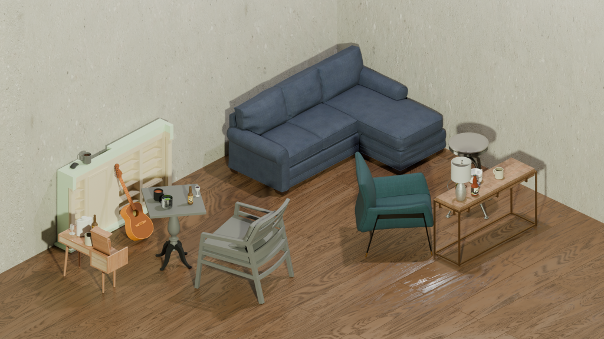
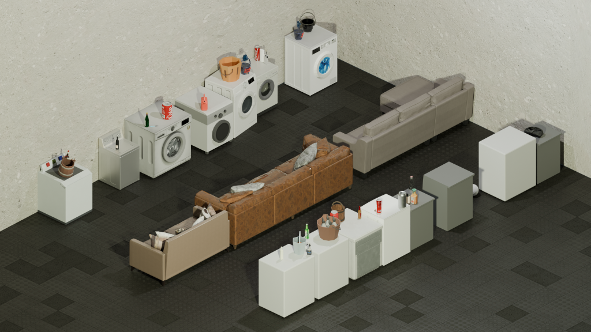
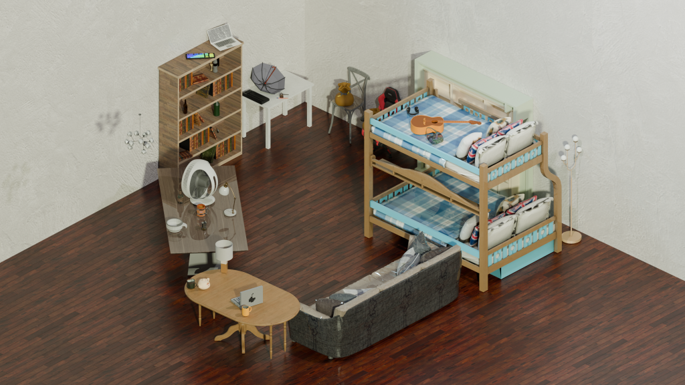
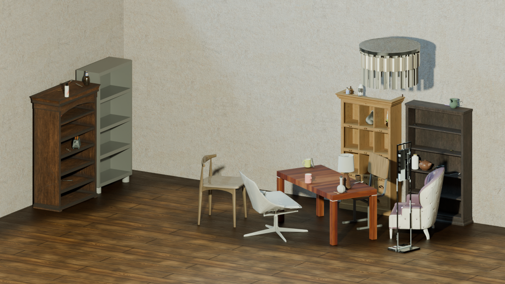
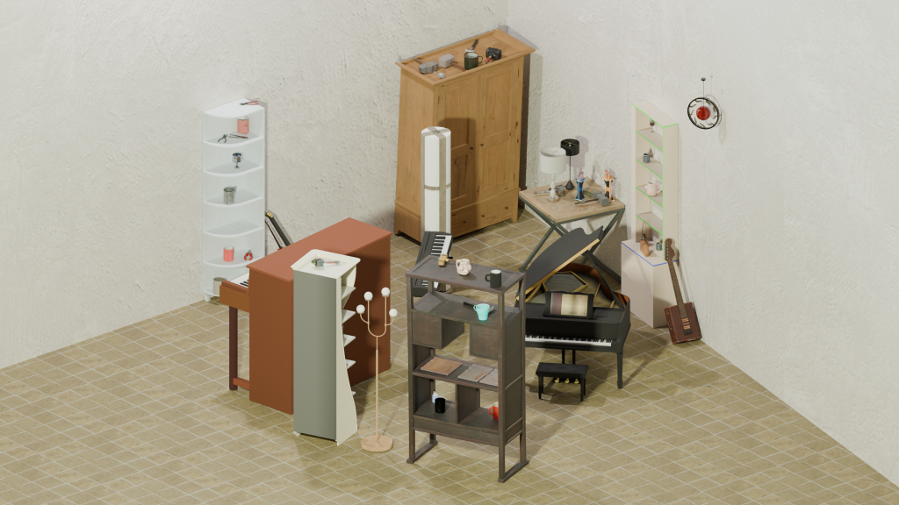
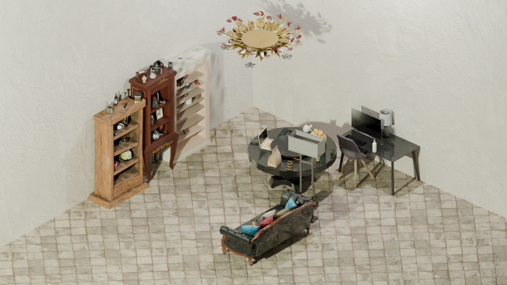
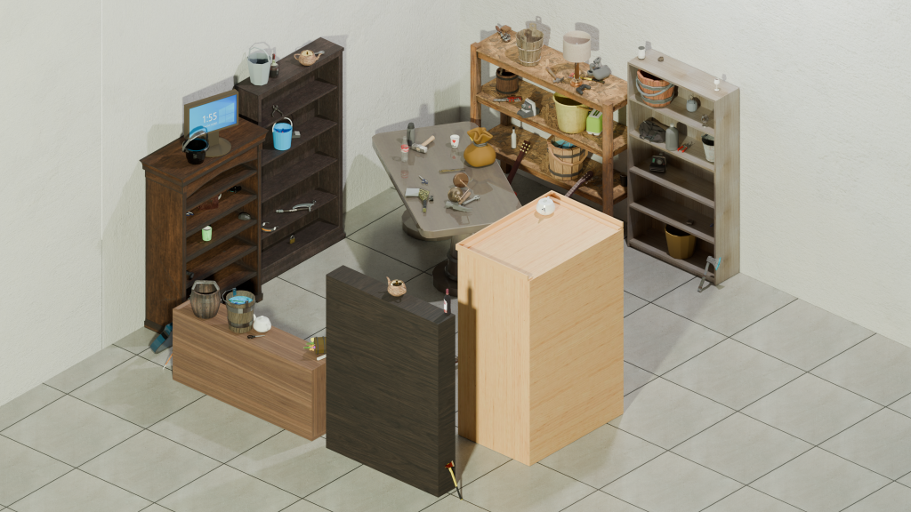
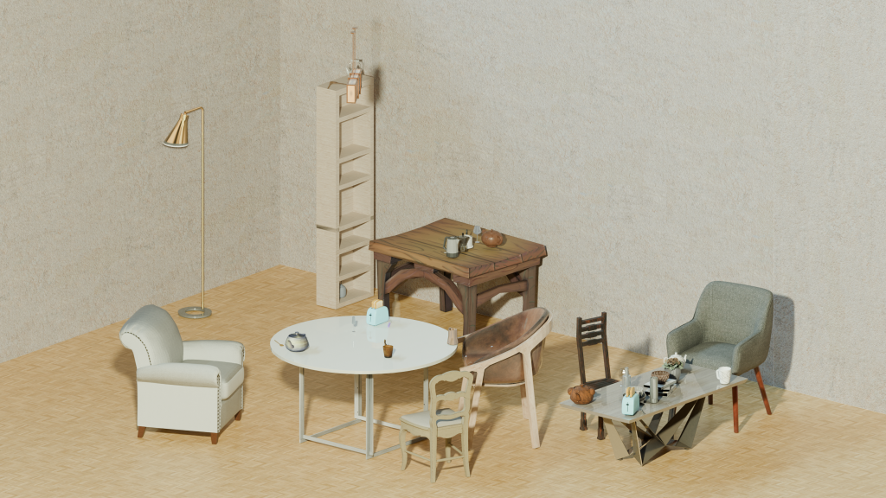
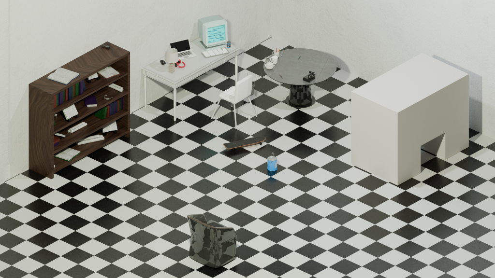
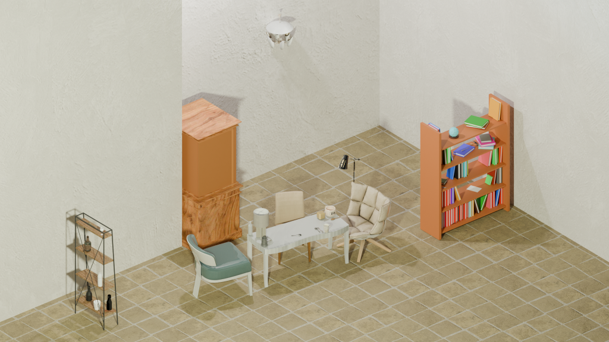
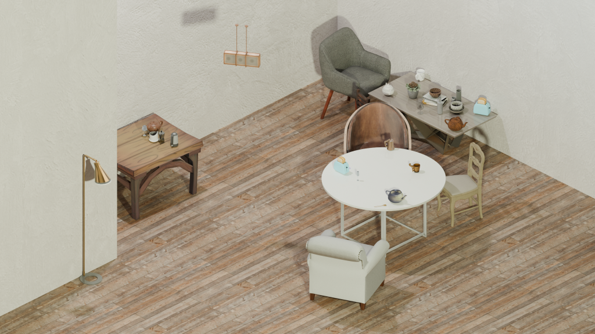
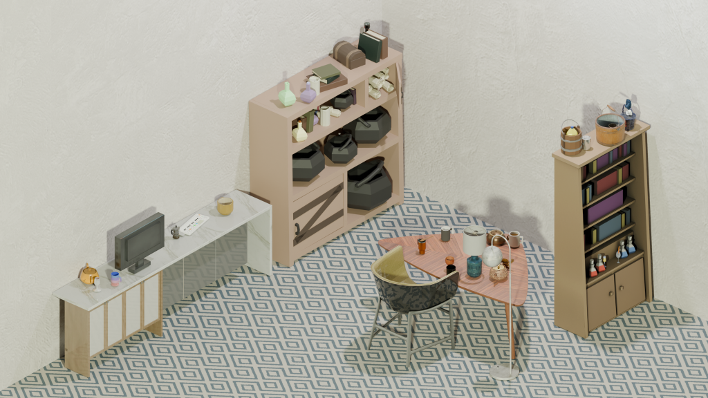
Leveraging the PARSE framework's explicit modeling of part-level spatial relations, we constructed PARSE-10k, a large-scale dataset comprising 10,000 unique indoor scenes.